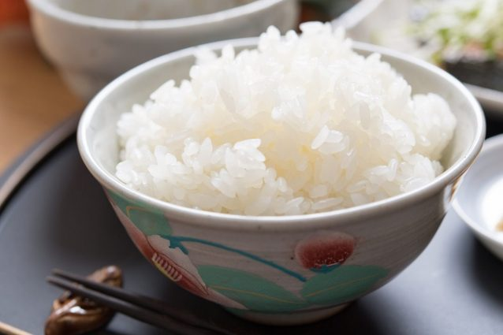

Sushi Rice

Learn how to make perfect sushi rice with this simple step-by-step recipe.
Make a batch and craft your own sushi selection platter for entertaining.
- Prep: 15 minutes
- Cook: 15 minutes plus soaking.
- Difficulty: Easy
- Serves: 4
- Gluten-free
- Low fat
- Vegan
Nutrition: Per serving
- kcal 432
- fat 1g
- saturates 0g
- carbs 99g
- sugars 26g
- fibre 3g
- protein 6g
- salt 3,7g (low)
Ingredients
For the sushi-su
- 120ml rice vinegar or brown rice vinegar
- 3 tbsp sugar seasoning, to taste (optional)
For the rice
- 450 Japanese rice (3 Japanese cups
Method
- First wash the rice thoroughly in a sieve for 4 minutes, genty turning it over by hand until the water runs clear.
- Drain the rice and put it in a pan with 540ml water.
- Leave to stand for a minimum of 30 minutes. (For best results leave for between 30 minutes to 1 hour.).
- Leave the soaking water in the pan with the rice and bring to the boil.
- Put the lid on, reduce the heat and simmer for 8-9 minutes.
- Turn the heat off and let it stand with the lid on for a further 5 minutes.
- Do not lift lhe lid.
- While the rice is cooking, to make the sushi-su, put the rice vinegar, sugar and 1 tbsp salt into a pan and leave on
a low heat until the sugar and salt have dissolved. Be careful not to let it boil or the flavour will spoil. Remove from
head and leave to cool.
- Put the rice into a wide flat dish such as a sushi oke, a baking dish or a roasting tray. Pour the sushi-su over teh rice and fold
it carefully not to damage the grains. You can use a fan or a hairdtyer on teh coolest setting to speed up the cooling process,
directing it at the rice. The suchi-su gives the rice more flavour and that familiar sticky glazed look.
- If you don't want to use the rice immediately, cover it with a damp cloth so that it doesn't dry out. Leave in a
cool place, but do not regrigerate. The fridge will make the rice hard and dry, and the sushi-su helps to preserve the rice without
refrigeration. Will keep for a day.
Click Me